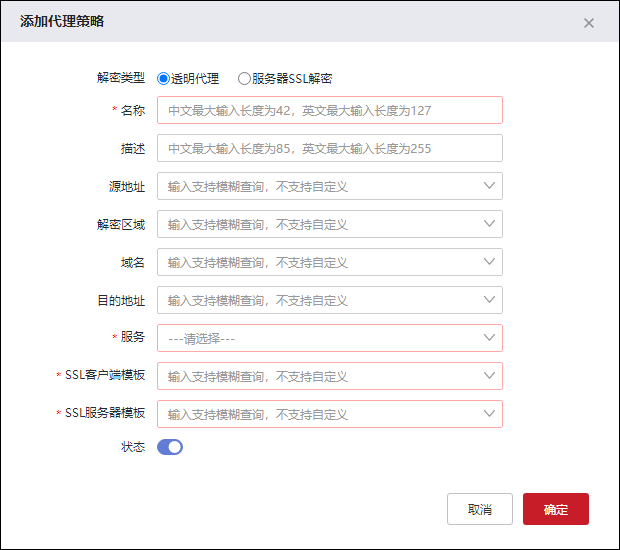

通过添加代理策略，将NGFW作为代理服务器，可对经过的加密流量进行解密，还原为明文流量，完成对其内容安全检查后，重新加密为加密流量发送给真正的服务器。
配置代理策略的具体操作如下：
| 步骤1 | 选择 ，点击“ ”，弹出“添加代理策略”对话框，界面如下图所示。 ”，弹出“添加代理策略”对话框，界面如下图所示。 |

各项参数的具体说明如下表所示。
参数 |
说明 |
|---|---|
解密类型 |
设置代理策略的解密类型，可选项：透明代理、服务器SSL解密。 透明代理：透明代理模式下，可以对客户端一侧的加密流量，解密还原为明文流量，经过安全引擎检测后，再加密为加密流量，发送服务器。 服务器SSL解密：服务器SSL解密模式下，可以对客户端一侧的加密流量，解密还原为明文流量，经过安全引擎检测后，直接以明文发给服务器。在保护服务器的同时，降低服务器的负载压力。 |
名称 |
必填项，设置代理策略的名称。 |
描述 |
设置代理策略的描述信息。 |
源地址 |
设置代理策略的源地址应当匹配的条件。点击下拉列表选择已设置好的地址对象，或者点击『添加』，新建地址对象，关于地址对象的配置请参见 地址。 |
解密区域 |
设置匹配代理策略的源区域应满足的条件。点击下拉列表选择已设置好的区域对象，或者点击『添加』，新建区域对象，关于区域对象的配置请参见 区域。 |
域名 |
设置代理策略匹配的域名，点击下拉列表选择已设置好的域名对象，或者点击『添加』，新建域名对象，关于域名对象的配置请参见 域名。 |
目的地址 |
设置代理策略的目的地址应当匹配的条件。点击下拉列表选择已设置好的地址对象，或者点击『添加』，新建地址对象，关于地址对象的配置请参见 地址。 |
服务 |
必选项，设置代理策略匹配的服务，可选项：HTTPS、SMTP_over_SSL、POP3_over_SSL、IMAP_over_SSL、FTP_over_SSL_implicit。 |
SSL客户端模板 |
必选项，选择代理策略的客户端，可选择“预置动态证书模板”或点击『添加』自定义添加SSL客户端模板，关于模板的添加具体请参见 代理模板。 |
SSL服务器模板 |
必选项，当“解密类型”参数选择“透明代理”参数时，该参数可见，选择代理策略的服务器，点击下拉列表选择已设置好的SSL服务器模板，或者点击『添加』新建SSL服务器模板，关于模板的添加具体请参见 代理模板。 |
状态 |
设置该代理策略的状态，可选项：开启、关闭。“ |

| 步骤2 | 配置完成后点击【确定】按钮完成模板添加。 |